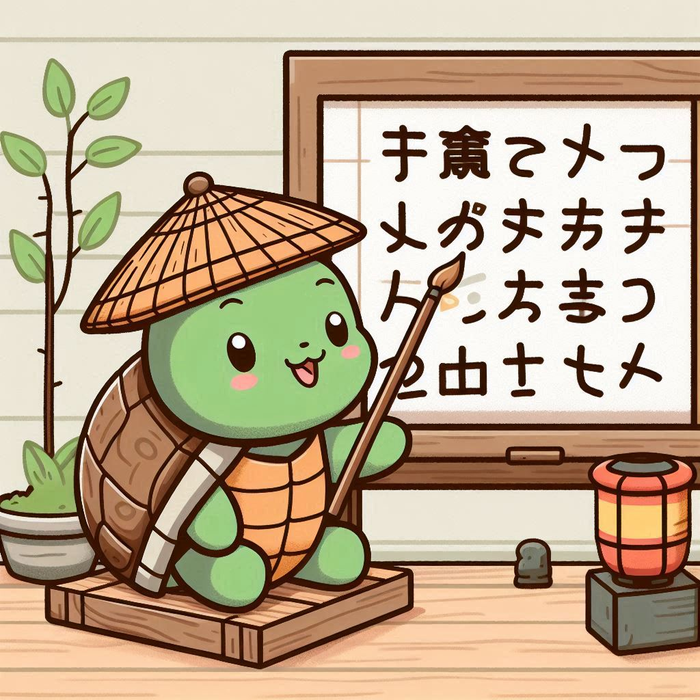

Welcome to KanjiList.org
Your ultimate resource for mastering Japanese Kanji and vocabulary. Whether you're a beginner just starting out or an advanced learner, our site offers a range of tools and resources to help you on your journey.
Explore Our Kanji Lists
Discover our comprehensive Kanji lists, meticulously organized by JLPT level, grade, and frequency of use. Whether you're a beginner or looking to refine your skills, our lists make it effortless to find and study the characters that are essential for your learning journey. Here’s a glimpse of what you can expect:
Frequency of Use:
Explore characters based on their commonality in everyday Japanese, helping you prioritize the most useful Kanji for practical understanding.
See MoreSchool Grades
Learn kanji in the same order than native japanese, access Kanji lists organized by school grade, perfect for tracking progress or revisiting foundational characters.
See MoreJLPT Levels:
Find Kanji categorized by the Japanese-Language Proficiency Test levels, from N5 to N1, ensuring you focus on the characters relevant to your current study stage.
See MoreBuild Your Vocabulary
Alongside Kanji, learning the right vocabulary is key to mastering Japanese. Browse through our curated lists to find words organized by topic, level, and usage frequency.
Organized by Word Type
Find targeted lists for verbs, adjectives, nouns, and other word types to enhance your understanding of Japanese grammar and usage.
Explore ListsVaried by Number of Words
Choose from lists of different sizes to match your learning goals, whether you need a broad overview or a focused set of terms.
Explore ListsSorted by Topic
Explore vocabulary related to specific subjects or themes, making it easier to learn relevant terms for various contexts.
Explore ListsLevel-Based Lists
Access words categorized by proficiency level to ensure you're studying terms appropriate to your current skills.
Explore ListsPractice with Flashcards
Master Japanese faster by practicing with flashcards. Our interactive system helps you reinforce Kanji and vocabulary through quick, efficient review.
Kanji Flashcards
Review and memorize Kanji characters with personalized flashcards that focus on reading, meaning, and writing. Strengthen your Kanji skills with regular practice.
Start FlashcardsVocabulary Flashcards
Learn and review essential Japanese vocabulary with flashcards sorted by topic or frequency. Boost your comprehension and recall ability for real-life conversations.
Start FlashcardsAbout Us
Discover the fastest and most efficient way to learn Japanese through curated Kanji and vocabulary lists.
Our Mission: Simplifying Japanese Learning
We are dedicated to helping learners of all levels achieve proficiency in Japanese by focusing on what truly matters—Kanji and vocabulary. Our platform is designed to accelerate your learning journey by providing structured lists and innovative methods.
Whether you're preparing for JLPT, expanding your knowledge for travel, or diving into Japanese culture, our curated resources make the process straightforward and enjoyable.
Why choose us? Because we simplify the complexity of learning Japanese, turning it into an achievable and engaging journey.
- Organized Kanji and vocabulary lists tailored for all levels.
- Learn efficiently with focused topics and usage-based categories.
- Accelerate your learning through expertly crafted resources and intuitive tools.
Join thousands of learners who are mastering Japanese with our fast, efficient, and effective approach.
Frequently Asked Questions
Learning Japanese is an exciting journey! Whether you are interested in reading, speaking, or understanding the culture, our platform helps you navigate through all the essential aspects of the Japanese language. Here are some of the common questions to guide you through your learning process.
1. What aspects of Japanese can I learn on your platform?
Our platform focuses on key areas essential to mastering Japanese: Kanji, vocabulary, and grammar. We provide structured lists based on proficiency levels, topic categories, and usage frequency, so you can start learning from the basics to advanced concepts in a streamlined way.
2. What are Kanji, and why are they important?
Kanji are the logographic characters used in the Japanese writing system. Learning Kanji is crucial for reading and writing Japanese. We help you learn the most frequently used Kanji characters, starting from basic ones and advancing to more complex characters as you progress.
3. What type of vocabulary will I learn?
Our vocabulary lists cover a wide range of topics, including everyday conversations, business terms, travel-related words, and more. Vocabulary is categorized by usage frequency and topic, so you can start learning the most relevant and practical words for your goals.
4. What other aspects of the language do you cover?
In addition to Kanji and vocabulary, we cover essential grammar points, pronunciation, sentence structure, and particles. These elements are key to mastering Japanese and understanding how the language works at a deeper level. Our content is designed to guide you step by step, from basic phrases to complex sentences.
5. How can I track my learning progress?
You can track your progress through our interactive features, including quizzes, flashcards, and personalized tracking tools. This way, you can see how many words and Kanji you've learned and how much you've advanced in your learning journey.